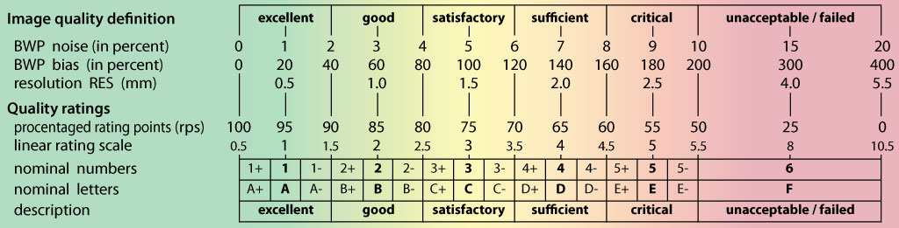

CAT report and quality control (in development):
CAT now also prints image quality measurements (Dahnke et al. 2016) and major global subjects specific measures in addition to the used preprocessing parameters. These data are further saved in the "cat_*.xml" files for each subject that can be read by cat_io_xml.
Image quality measures
Due to the wide range of rating and marking systems, the rating was defined for a percentage range and a numerical scaling that allows mapping to nominal numbers or letters with chromatic variants ("+" and "-") shown in table below. The obtained quality ratings range from 0.5 (100 rating points (rps)) to 10.5 (0 rps) with values around 1 and 2 describing (very) good image quality (grad A and B) and values around 5 (grad E) and higher (grad F, < 50 rps) indicating problematic images. The scaling of the QMs was performed on the basis of theoretical aspects and the analysis of synthetic and real MRI data, especially the BWP (Brain Web Phantom; Collins et al. 1998).

The image quality measures describe the properties of the image before CAT12 processing. They were estimated by using the tissue segmentation and were (nearly) independent of subject sex and health status.
-
NCR (Noise Contrast Ratio):
The NCR measures the local standard deviation in the optimized WM segment and is scaled by the minimum tissue contrast.
-
ICR (Inhomogeneity Contrast Ratio):
The ICR is measured as the global standard deviation within the optimized WM segment and is scaled by the minimum tissue contrast.
-
RES (RMS resolution):
To describe the resolution of an image, the RMS value of the voxel size is used. Outliers with exceptionally low resolutions in one of the
x y z dimensions are weighted much stronger than outliers with high resolutions, resulting in an asymmetric penalization.
The resulting ratings were combined as weighted average image quality rating IQR (Dahnke et al. 2016).
Tests of different databases such as ADNI, IXI, INDI, OASIS, PPMI etc. demonstrated that published data got good quality ratings in general.
Please note that

Low image quality can lead to underestimation of the GM in most preprocessings (Reuter et al. 2015, Dahnke et al. 2016). The following figure shows the effect of motion artifacts on IQR and the relative GM volume rGMV of a children dataset processed by 5 different tissue segmentations.
References:
-
Collins et al. 1998
Collins DL, Zijdenbos AP, Kollokian V, Sled JG, Kabani NJ, Holmes CJ, Evans AC. Design and construction of a realistic digital brain phantom. IEEE Transactions on Medical Imaging 1998; 17(3), 463-468.
-
Dahnke et al. 2016
Dahnke R, Ziegler G, Groflkreutz J, Gaser C. Retrospective quality assurance in T1 images. In preparation.
-
Reuter et al. 2015
Reuter M, Tisdall MD, Qureshi A, Buckner RL, van der Kouwe AJW, Fischl B. Head motion during MRI acquisition reduces gray matter volume and thickness estimates. NeuroImage 2015, 107, 107-115.
-
Winterburn et al. 2013
Winterburn JL, Pruessner JC, Chavez S, Schira, MM, Lobaugh NJ, Voineskos AN, Chakravarty MM. A novel in vivo atlas of human hippocampal subfields using high-resolution 3 T magnetic resonance imaging. NeuroImage 2013, 74, 254-265.
<\ul>